pacman::p_load(sf,tmap,tidyverse)Hands-on Exercise 2
Thematic Mapping & GeoVisualization with R
In general, thematic mapping involves the use of map symbols to visualize selected properties of geographic features that are not naturally visible, such as population, temperature, crime rate, and property prices, just to mention a few of them.
Geovisualisation, on the other hand, works by providing graphical ideation to render a place, a phenomenon or a process visible, enabling human’s most powerful information-processing abilities – those of spatial cognition associated with our eye–brain vision system – to be directly brought to bear.
1.0 Getting Started
In this hands-on exercise, the key R package use is tmap package in R. Beside tmap package, four other R packages will be used. They are:
readr for importing delimited text file,
tidyr for tidying data,
dplyr for wrangling data and
sf for handling geospatial data.
Among the four packages, readr, tidyr and dplyr are part of tidyverse package.
The code chunk below will be used to install and load these packages in RStudio.
2.0 Importing Data into R
2.1 Datasets Used
| Master Plan 2014 Subzone Boundary (Web) | MP14_SUBZONE_WEB_PL) |
It consists of the geographical boundary of Singapore at the planning subzone level. The data is based on URA Master Plan 2014. |
| Singapore Residents by Planning Area / Subzone, Age Group, Sex and Type of Dwelling, June 2011-2020 | respopagesextod2011to2020.csv |
This is an aspatial data fie. It can be downloaded at Department of Statistics, Singapore Although it does not contain any coordinates values, but it’s PA and SZ fields can be used as unique identifiers to geocode to MP14_SUBZONE_WEB_PL shapefile. |
2.2 Importing Geospatial Data into R
The code chunk below uses the st_read() function of sf package to import MP14_SUBZONE_WEB_PL shapefile into R as a simple feature data frame called mpsz.
mpsz <- st_read(dsn="data/geospatial"
, layer = "MP14_SUBZONE_WEB_PL")Reading layer `MP14_SUBZONE_WEB_PL' from data source
`/Users/jezelei/jezeleii/IS415-GA/Hands-On_Exercise/Hands-on_Ex02/data/geospatial'
using driver `ESRI Shapefile'
Simple feature collection with 323 features and 15 fields
Geometry type: MULTIPOLYGON
Dimension: XY
Bounding box: xmin: 2667.538 ymin: 15748.72 xmax: 56396.44 ymax: 50256.33
Projected CRS: SVY21mpszSimple feature collection with 323 features and 15 fields
Geometry type: MULTIPOLYGON
Dimension: XY
Bounding box: xmin: 2667.538 ymin: 15748.72 xmax: 56396.44 ymax: 50256.33
Projected CRS: SVY21
First 10 features:
OBJECTID SUBZONE_NO SUBZONE_N SUBZONE_C CA_IND PLN_AREA_N
1 1 1 MARINA SOUTH MSSZ01 Y MARINA SOUTH
2 2 1 PEARL'S HILL OTSZ01 Y OUTRAM
3 3 3 BOAT QUAY SRSZ03 Y SINGAPORE RIVER
4 4 8 HENDERSON HILL BMSZ08 N BUKIT MERAH
5 5 3 REDHILL BMSZ03 N BUKIT MERAH
6 6 7 ALEXANDRA HILL BMSZ07 N BUKIT MERAH
7 7 9 BUKIT HO SWEE BMSZ09 N BUKIT MERAH
8 8 2 CLARKE QUAY SRSZ02 Y SINGAPORE RIVER
9 9 13 PASIR PANJANG 1 QTSZ13 N QUEENSTOWN
10 10 7 QUEENSWAY QTSZ07 N QUEENSTOWN
PLN_AREA_C REGION_N REGION_C INC_CRC FMEL_UPD_D X_ADDR
1 MS CENTRAL REGION CR 5ED7EB253F99252E 2014-12-05 31595.84
2 OT CENTRAL REGION CR 8C7149B9EB32EEFC 2014-12-05 28679.06
3 SR CENTRAL REGION CR C35FEFF02B13E0E5 2014-12-05 29654.96
4 BM CENTRAL REGION CR 3775D82C5DDBEFBD 2014-12-05 26782.83
5 BM CENTRAL REGION CR 85D9ABEF0A40678F 2014-12-05 26201.96
6 BM CENTRAL REGION CR 9D286521EF5E3B59 2014-12-05 25358.82
7 BM CENTRAL REGION CR 7839A8577144EFE2 2014-12-05 27680.06
8 SR CENTRAL REGION CR 48661DC0FBA09F7A 2014-12-05 29253.21
9 QT CENTRAL REGION CR 1F721290C421BFAB 2014-12-05 22077.34
10 QT CENTRAL REGION CR 3580D2AFFBEE914C 2014-12-05 24168.31
Y_ADDR SHAPE_Leng SHAPE_Area geometry
1 29220.19 5267.381 1630379.3 MULTIPOLYGON (((31495.56 30...
2 29782.05 3506.107 559816.2 MULTIPOLYGON (((29092.28 30...
3 29974.66 1740.926 160807.5 MULTIPOLYGON (((29932.33 29...
4 29933.77 3313.625 595428.9 MULTIPOLYGON (((27131.28 30...
5 30005.70 2825.594 387429.4 MULTIPOLYGON (((26451.03 30...
6 29991.38 4428.913 1030378.8 MULTIPOLYGON (((25899.7 297...
7 30230.86 3275.312 551732.0 MULTIPOLYGON (((27746.95 30...
8 30222.86 2208.619 290184.7 MULTIPOLYGON (((29351.26 29...
9 29893.78 6571.323 1084792.3 MULTIPOLYGON (((20996.49 30...
10 30104.18 3454.239 631644.3 MULTIPOLYGON (((24472.11 29...- Notice that only the first ten records will be displayed. Do you know why?
-
R’s default printing behaviour, where it displays the first 10 rows by default, due to the ‘tibble’ package.
2.3 Importing Attribute Data into R
Next, I will import respopagsex2011to2020.csv file into RStudio and save the file into an R dataframe called popdata.
The task will be performed by using read_csv() function of readr package as shown in the code chunk below.
popdata <- read.csv("data/aspatial/respopagesextod2011to2020.csv")head(popdata) PA SZ AG Sex
1 Ang Mo Kio Ang Mo Kio Town Centre 0_to_4 Males
2 Ang Mo Kio Ang Mo Kio Town Centre 0_to_4 Males
3 Ang Mo Kio Ang Mo Kio Town Centre 0_to_4 Males
4 Ang Mo Kio Ang Mo Kio Town Centre 0_to_4 Males
5 Ang Mo Kio Ang Mo Kio Town Centre 0_to_4 Males
6 Ang Mo Kio Ang Mo Kio Town Centre 0_to_4 Males
TOD Pop Time
1 HDB 1- and 2-Room Flats 0 2011
2 HDB 3-Room Flats 10 2011
3 HDB 4-Room Flats 30 2011
4 HDB 5-Room and Executive Flats 50 2011
5 HUDC Flats (excluding those privatised) 0 2011
6 Landed Properties 0 20112.4 Data preparation
I will prepare a data table with year 2020 values, including the variables PA, SZ, YOUNG, ECONOMY ACTIVE, AGED, TOTAL, DEPENDENCY.
| Young | age group 0 to 4 until age group 20 to 24 |
| Economy Active | age group 25-29 until age group 60-64 |
| Aged | age group 65 and above, |
| Total | all age groups |
| Dependency | the ratio between young and aged against economy active group |
2.4.1 Data wrangling
The following functions will be used:
pivot_wider() |
tidyr package |
mutate(),filter(),group_by(),select() |
dplyr package |
#Filter to 2020
popdata2020_step1 <- popdata %>%
filter(Time == 2020)
#print(popdata2020_step1)
#Group by PA, SZ, AG & summarise. Ungroup to ensure the aggregated statistic is not mistakenly used later on
popdata2020_step2 <- popdata2020_step1 %>%
group_by(PA, SZ, AG) %>%
summarise (`POP` = sum(`Pop`)) %>%
ungroup()`summarise()` has grouped output by 'PA', 'SZ'. You can override using the
`.groups` argument.#pivot wider
popdata2020_step3 <- popdata2020_step2 %>%
pivot_wider(names_from = AG, values_from = POP)
#calculate YOUNG population
popdata2020_step4 <- popdata2020_step3 %>%
mutate(`YOUNG` = rowSums(.[3:6]) + rowSums(.[14]))
#calculate ECONOMY ACTIVE
popdata2020_step5 <- popdata2020_step4 %>%
mutate(`ECONOMY ACTIVE` = rowSums(.[7:13]) + rowSums(.[15]))
#calculate AGED
popdata2020_step6 <- popdata2020_step5 %>%
mutate(`AGED` = rowSums(.[16:21]))
#calculate TOTAL
popdata2020_total <- popdata2020_step6 %>%
mutate(`TOTAL` = rowSums(.[3:21]))
#calculate DEPENDENCY RATIO
popdata2020 <- popdata2020_total %>%
mutate(`DEPENDENCY` = (`YOUNG` + `AGED`) /`ECONOMY ACTIVE`) %>% select(`PA`, `SZ`, `YOUNG`,
`ECONOMY ACTIVE`, `AGED`,
`TOTAL`, `DEPENDENCY`)
print(popdata2020)# A tibble: 332 × 7
PA SZ YOUNG `ECONOMY ACTIVE` AGED TOTAL DEPENDENCY
<chr> <chr> <dbl> <dbl> <dbl> <dbl> <dbl>
1 Ang Mo Kio Ang Mo Kio Town Cen… 1290 2760 760 4810 0.743
2 Ang Mo Kio Cheng San 5640 16460 6050 28150 0.710
3 Ang Mo Kio Chong Boon 5100 15000 6470 26570 0.771
4 Ang Mo Kio Kebun Bahru 4620 13010 5120 22750 0.749
5 Ang Mo Kio Sembawang Hills 1880 3630 1310 6820 0.879
6 Ang Mo Kio Shangri-La 3330 9050 3610 15990 0.767
7 Ang Mo Kio Tagore 1940 4480 1530 7950 0.775
8 Ang Mo Kio Townsville 4190 11950 5100 21240 0.777
9 Ang Mo Kio Yio Chu Kang 0 0 0 0 NaN
10 Ang Mo Kio Yio Chu Kang East 1110 2410 750 4270 0.772
# ℹ 322 more rows
To see an overview of the column headers, we use the colnames() function after the pivot_wider() function has been implemented:
col_names <- colnames(popdata2020_step3)
for (i in seq_along(col_names)){
cat(i, col_names[i], "\n")
}1 PA
2 SZ
3 0_to_4
4 10_to_14
5 15_to_19
6 20_to_24
7 25_to_29
8 30_to_34
9 35_to_39
10 40_to_44
11 45_to_49
12 50_to_54
13 55_to_59
14 5_to_9
15 60_to_64
16 65_to_69
17 70_to_74
18 75_to_79
19 80_to_84
20 85_to_89
21 90_and_over 2.4.2 Joining the attribute data and geospatial data
Before we can perform the georelational join, one extra step is required to convert the values in PA and SZ fields to uppercase. This is because the values of PA and SZ fields are made up of upper- and lowercase. On the other, hand the SUBZONE_N and PLN_AREA_N are in uppercase.
popdata2020 <- popdata2020 %>%
mutate_at(.vars = vars(PA,SZ),
.funs = list(toupper)) %>% filter(`ECONOMY ACTIVE` > 0)Next, left_join() of dplyr is used to join the geographical data and attribute table using planning subzone name e.g. SUBZONE_N and SZ as the common identifier
mpsz_pop2020 <- left_join(mpsz, popdata2020, by = c("SUBZONE_N" = "SZ"))Learning points:
- left_join() of dplyr package is used with
mpszsimple feature data frame as the left data table is to ensure that the output will be a simple features data frame.
dir.create("data/rds", recursive = TRUE, showWarnings = FALSE)
write_rds(mpsz_pop2020, "data/rds/mpszpop2020.rds")3.0 Choropleth Mapping Geospatial Data Using tmap
Choropleth mapping involves the symbolisation of enumeration units, such as countries, provinces, states, counties or census units, using area patterns or graduated colors.
Approaches to prepare thematic map using tmap, they are:
- Plotting a thematic map quickly by using qtm().
- Plotting highly customisable thematic map by using tmap elements.
3.1 Plotting a choropleth map quickly using qtm()
Draw a cartographic standard choropleth map as shown below:
tmap_mode("plot")tmap mode set to plottingqtm(mpsz_pop2020,
fill = "DEPENDENCY")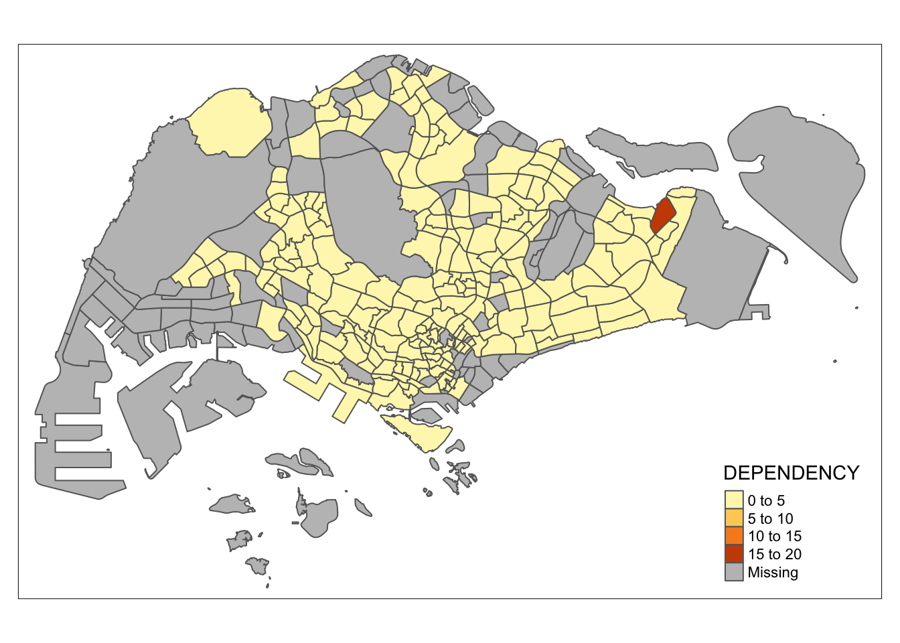
Learning points :
tmap_mode() with “plot” option is used to produce a static map. For interactive mode, “view” option should be used.
fill argument is used to map the attribute (i.e. DEPENDENCY)
3.2 Creating a choropleth map by using tmap’s elements
The disadvantge of qtm() is that it makes aesthetics of individual layers harder to control. To counter this, tmap’s drawing elements should be used.
tm_shape(mpsz_pop2020) +
tm_fill("DEPENDENCY",
style = "quantile",
palette = "Blues",
title = "Dependency ratio") + tm_layout(main.title = "Distribution of Dependency Ratio by planning subzone",
main.title.position = "center",
main.title.size=1.5,
legend.height=0.45,
legend.width=0.35,
frame=TRUE) +
tm_borders(alpha = 0.3) +
tm_compass(type="4star", size = 3) +
tm_scale_bar() +
tm_grid(alpha = 0.2) +
tm_credits("Source: Planning Sub-zone boundary from URA\n and Population data from Department of Statistics (DOS)", position = c("left", "bottom"))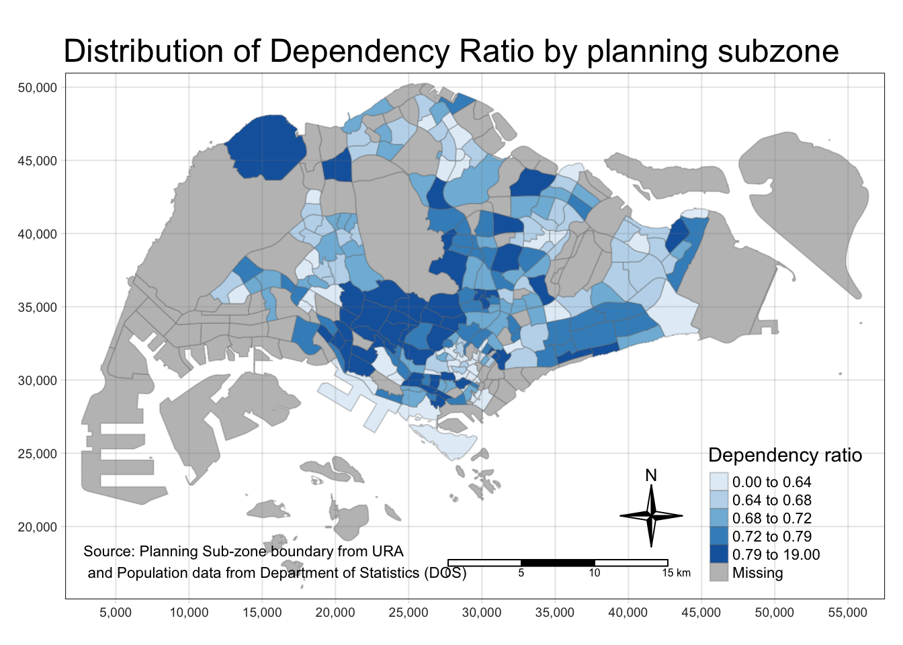
3.3 Drawing a base map
The basic building block of tmap is tm_shape() followed by one or more layer elemments such as tm_fill() and tm_polygons().
In the code chunk below, tm_shape() is used to define the input data (i.e mpsz_pop2020) and tm_polygons() is used to draw the planning subzone polygons
tm_shape(mpsz_pop2020) +
tm_polygons()
3.4 Drawing a choropleth map using tm_polygons()
To draw a choropleth map showing the geographical distribution of a selected variable by planning subzone, I will assign the target variable such as Dependency to tm_polygons().
tm_shape(mpsz_pop2020) + tm_polygons("DEPENDENCY")
- Learning Pints from tm_polygons():
-
The default interval binning used to draw the choropleth map is called “pretty”. A detailed discussion of the data classification methods supported by tmap will be provided in sub-section 4.3.
The default colour scheme used is
YlOrRdof ColorBrewer. You will learn more about the color scheme in sub-section 4.4.By default, Missing value will be shaded in grey.
3.5 Drawing a choropleth map using tm_fill() and tm_border()
tm_polygons() is a wraper of tm_fill() and tm_border().
The following code chunk draws the choropleth map using tm_fill() alone.
tm_shape(mpsz_pop2020) + tm_fill("DEPENDENCY")
Note: Planning subzones are shared according to the respective dependecy values
To add the boundary of the planning subzones, tm_borders will be used as shown in the code chunk below.
tm_shape(mpsz_pop2020) +
tm_fill("DEPENDENCY") +
tm_borders(lwd = 0.5, alpha = 0.5)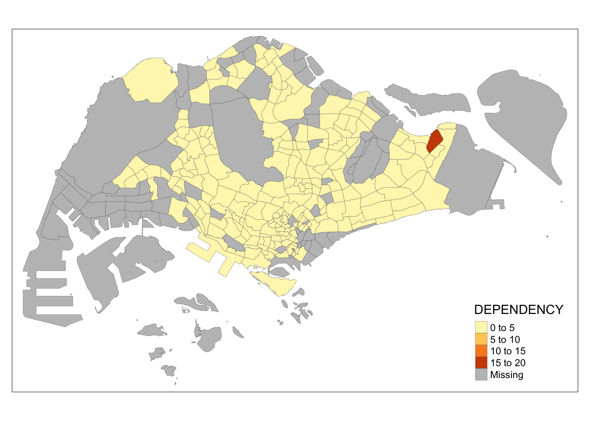
Note: Light-gray border lines have been added on the choropleth map.
The alpha argument is used to define transparency number between 0 (totally transparent) and 1 (not transparent). By default, the alpha value of the col is used (normally 1).
Beside alpha argument, there are three other arguments for tm_borders(), they are:
col = border colour,
lwd = border line width. The default is 1, and
lty = border line type. The default is “solid”.
4.0 Data classification methods of tmap
tmap provides a total ten data classification methods, namely: fixed, sd, equal, pretty (default), quantile, kmeans, hclust, bclust, fisher, and jenks.
To define a data classification method, the style argument of tm_fill() or tm_polygons() will be used.
4.1 Plotting choropleth maps with built-in classification methods
The code chunk below shows a quantile data classification that used 5 classes.
tm_shape(mpsz_pop2020) +
tm_fill("DEPENDENCY",
n = 5,
style = "quantile") +
tm_borders(alpha = 0.5)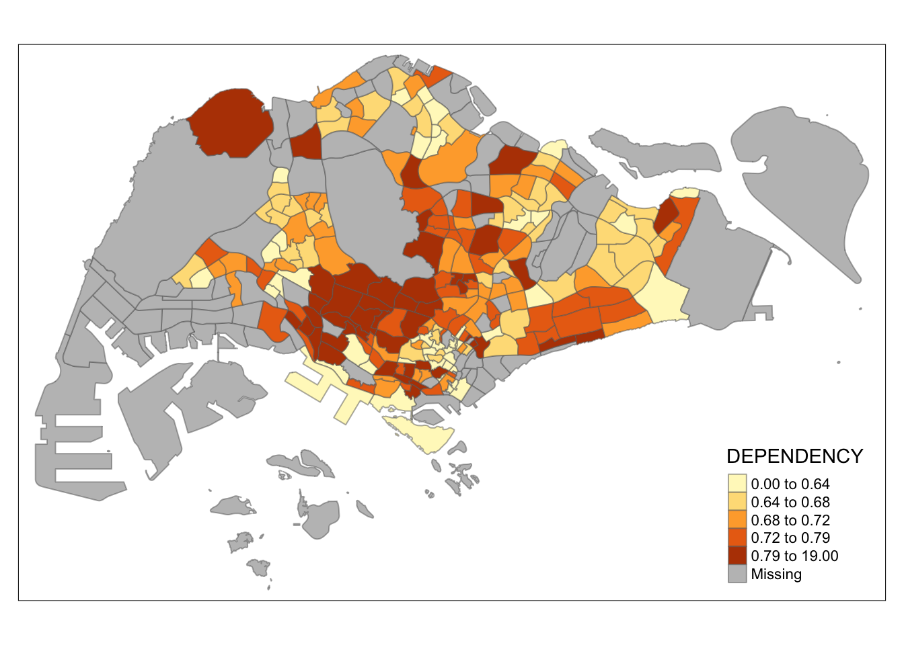
Note: The distribution of quantile data classification methods are more evenly distributed than equal data classification methods
DIY: Using what you had learned, prepare choropleth maps by using different classification methods supported by tmap and compare their differences.
map_equal <- tm_shape(mpsz_pop2020) +
tm_polygons("DEPENDENCY",
n = 5,
style = "equal",
title ="Equal Interval Classification") +
tm_borders(alpha = 0.3)
map_quantile <- tm_shape(mpsz_pop2020) +
tm_polygons("DEPENDENCY",
n = 5,
style = "quantile",
title = "Quantile Classification") +
tm_borders(alpha = 0.3)
map_jenks <- tm_shape(mpsz_pop2020) +
tm_polygons("DEPENDENCY",
n = 5,
style = "jenks",
title = "Jenks Classification") +
tm_borders(alpha = 0.3)
tmap_arrange(map_equal, map_quantile, map_jenks)Warning: One tm layer group has duplicated layer types, which are omitted. To
draw multiple layers of the same type, use multiple layer groups (i.e. specify
tm_shape prior to each of them).
Warning: One tm layer group has duplicated layer types, which are omitted. To
draw multiple layers of the same type, use multiple layer groups (i.e. specify
tm_shape prior to each of them).
Warning: One tm layer group has duplicated layer types, which are omitted. To
draw multiple layers of the same type, use multiple layer groups (i.e. specify
tm_shape prior to each of them).
Warning: One tm layer group has duplicated layer types, which are omitted. To
draw multiple layers of the same type, use multiple layer groups (i.e. specify
tm_shape prior to each of them).
Warning: One tm layer group has duplicated layer types, which are omitted. To
draw multiple layers of the same type, use multiple layer groups (i.e. specify
tm_shape prior to each of them).
Warning: One tm layer group has duplicated layer types, which are omitted. To
draw multiple layers of the same type, use multiple layer groups (i.e. specify
tm_shape prior to each of them).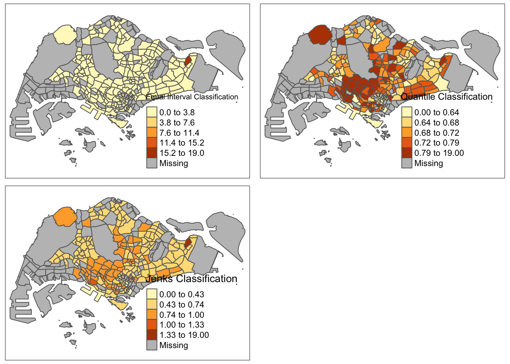
DIY: Preparing choropleth maps by using similar classification method but with different numbers of classes (i.e. 2, 6, 10, 20). Compare the output maps, what observation can you draw?
map_2_classes <- tm_shape(mpsz_pop2020) +
tm_fill("DEPENDENCY",
n = 2,
style = "quantile",
title = "2 Classes") +
tm_borders(alpha = 0.5)
map_6_classes <- tm_shape(mpsz_pop2020) +
tm_fill("DEPENDENCY",
n = 6,
style = "quantile",
title = "6 Classes") +
tm_borders(alpha = 0.5)
map_10_classes <- tm_shape(mpsz_pop2020) +
tm_fill("DEPENDENCY",
n = 10,
style = "quantile",
title = "10 Classes") +
tm_borders(alpha = 0.5)
map_20_classes <- tm_shape(mpsz_pop2020) +
tm_fill("DEPENDENCY",
n = 20,
style = "quantile",
title = "20 Classes") +
tm_borders(alpha = 0.5)
tmap_arrange(map_2_classes, map_6_classes, map_10_classes, map_20_classes)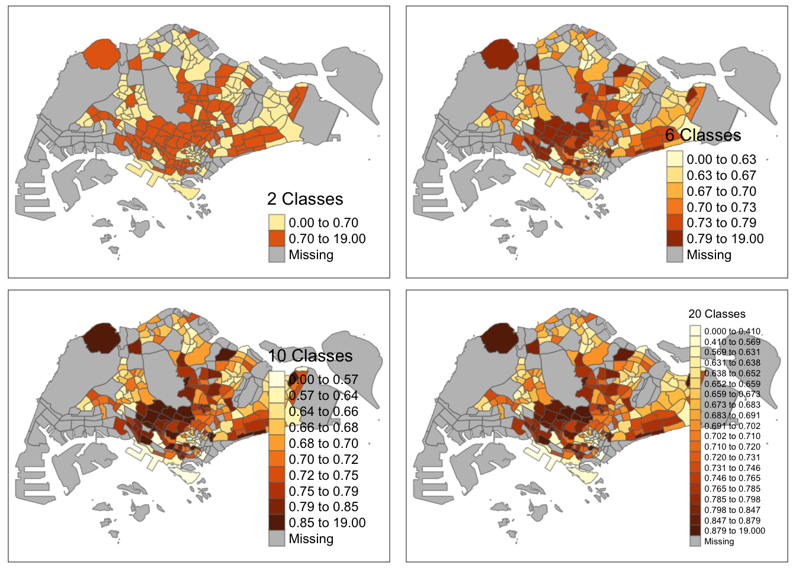
Learning point:
When creating choropleth maps, the number of classes can significantly impact visualisation or interpretation. Most notable in the figure with 2 classes, it emphasizes the difference between 2 broad categories, but oversimplifies the data such that Class 1 (0.00 to 0.70) actually accounts for much less of the data spectrum compared to (0.70 to 19.00)
Six classes is usually the widely used number for classes, providing optimal number and details for the user while making sure not to overwhelm them with the data (compared to 20 classes)
4.2 Plotting choropleth map with custom break
For all the built-in styles, the category breaks are computed internally. In order to override these defaults, the breakpoints can be set explicitly by means of the breaks argument to the tm_fill(). It is important to note that, in tmap the breaks include a minimum and maximum. As a result, in order to end up with n categories, n+1 elements must be specified in the breaks option (the values must be in increasing order).
The code chunk below will compute the descriptive statistics of the DEPENDENCY field, a good practice
summary(mpsz_pop2020$DEPENDENCY) Min. 1st Qu. Median Mean 3rd Qu. Max. NA's
0.0000 0.6519 0.7025 0.7742 0.7645 19.0000 92 head(mpsz_pop2020)Simple feature collection with 6 features and 21 fields
Geometry type: MULTIPOLYGON
Dimension: XY
Bounding box: xmin: 24468.89 ymin: 28369.47 xmax: 32362.39 ymax: 30542.74
Projected CRS: SVY21
OBJECTID SUBZONE_NO SUBZONE_N SUBZONE_C CA_IND PLN_AREA_N
1 1 1 MARINA SOUTH MSSZ01 Y MARINA SOUTH
2 2 1 PEARL'S HILL OTSZ01 Y OUTRAM
3 3 3 BOAT QUAY SRSZ03 Y SINGAPORE RIVER
4 4 8 HENDERSON HILL BMSZ08 N BUKIT MERAH
5 5 3 REDHILL BMSZ03 N BUKIT MERAH
6 6 7 ALEXANDRA HILL BMSZ07 N BUKIT MERAH
PLN_AREA_C REGION_N REGION_C INC_CRC FMEL_UPD_D X_ADDR
1 MS CENTRAL REGION CR 5ED7EB253F99252E 2014-12-05 31595.84
2 OT CENTRAL REGION CR 8C7149B9EB32EEFC 2014-12-05 28679.06
3 SR CENTRAL REGION CR C35FEFF02B13E0E5 2014-12-05 29654.96
4 BM CENTRAL REGION CR 3775D82C5DDBEFBD 2014-12-05 26782.83
5 BM CENTRAL REGION CR 85D9ABEF0A40678F 2014-12-05 26201.96
6 BM CENTRAL REGION CR 9D286521EF5E3B59 2014-12-05 25358.82
Y_ADDR SHAPE_Leng SHAPE_Area PA YOUNG ECONOMY ACTIVE AGED
1 29220.19 5267.381 1630379.3 <NA> NA NA NA
2 29782.05 3506.107 559816.2 OUTRAM 930 3130 2120
3 29974.66 1740.926 160807.5 SINGAPORE RIVER 0 40 10
4 29933.77 3313.625 595428.9 BUKIT MERAH 2600 7450 3320
5 30005.70 2825.594 387429.4 BUKIT MERAH 2760 6160 1740
6 29991.38 4428.913 1030378.8 BUKIT MERAH 2800 7340 3420
TOTAL DEPENDENCY geometry
1 NA NA MULTIPOLYGON (((31495.56 30...
2 6180 0.9744409 MULTIPOLYGON (((29092.28 30...
3 50 0.2500000 MULTIPOLYGON (((29932.33 29...
4 13370 0.7946309 MULTIPOLYGON (((27131.28 30...
5 10660 0.7305195 MULTIPOLYGON (((26451.03 30...
6 13560 0.8474114 MULTIPOLYGON (((25899.7 297...With reference to the results above, we set break point at 0.60, 0.70, 0.80, and 0.90. In addition, we also need to include a minimum and maximum, which we set at 0 and 100. Our breaks vector is thus c(0, 0.60, 0.70, 0.80, 0.90, 1.00).
Now, I will plot the choropleth map using the code chunk below
tm_shape(mpsz_pop2020) +
tm_fill("DEPENDENCY",
breaks = c(0,0.60,0.70,0.80,0.90,1.00)) +
tm_borders(alpha = 0.8)Warning: Values have found that are higher than the highest break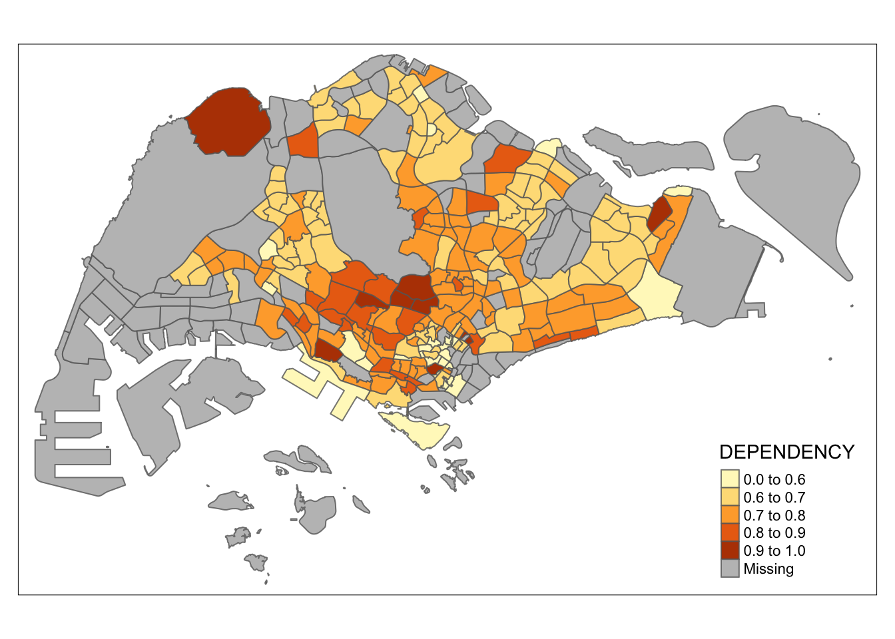
5.0 Colour Scheme
tmap supports colour ramps either defined by the user or a set of predefined colour ramps from the RColorBrewer package.
5.1 Using ColourBrewer palette
To change the colour, we assign the preferred colour to palette argument of tm_fill() as shown in the code chunk below.
tm_shape(mpsz_pop2020) +
tm_fill("DEPENDENCY",
n = 6,
style="quantile",
palette = "RdPu") +
tm_borders(alpha = 0.5)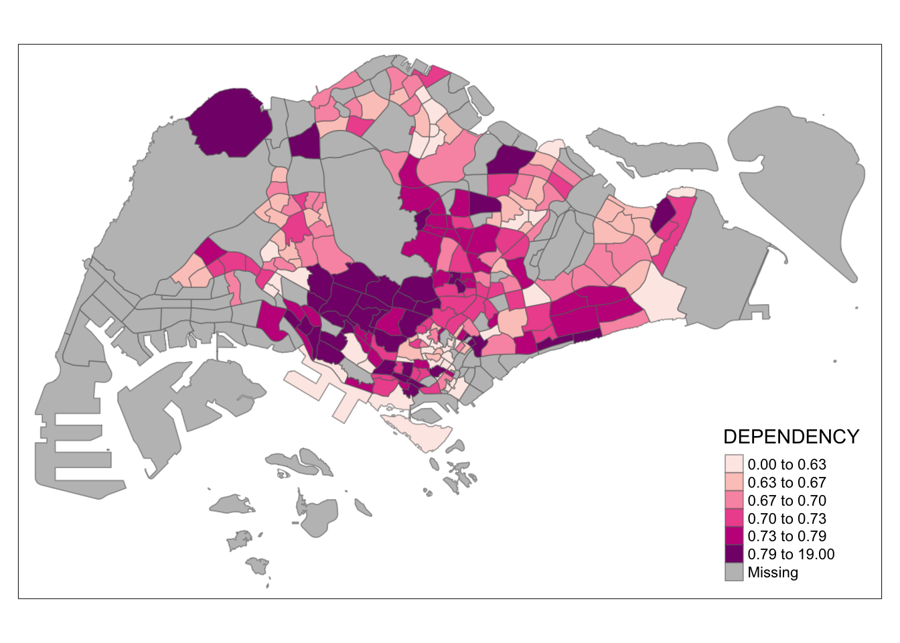
Note : The colour scheme is shaded in red-purple.
To reverse the color shading, add a “-” prefix.
tm_shape(mpsz_pop2020)+
tm_fill("DEPENDENCY",
style="quantile",
palette = "-RdPu") +
tm_borders(alpha = 0.5)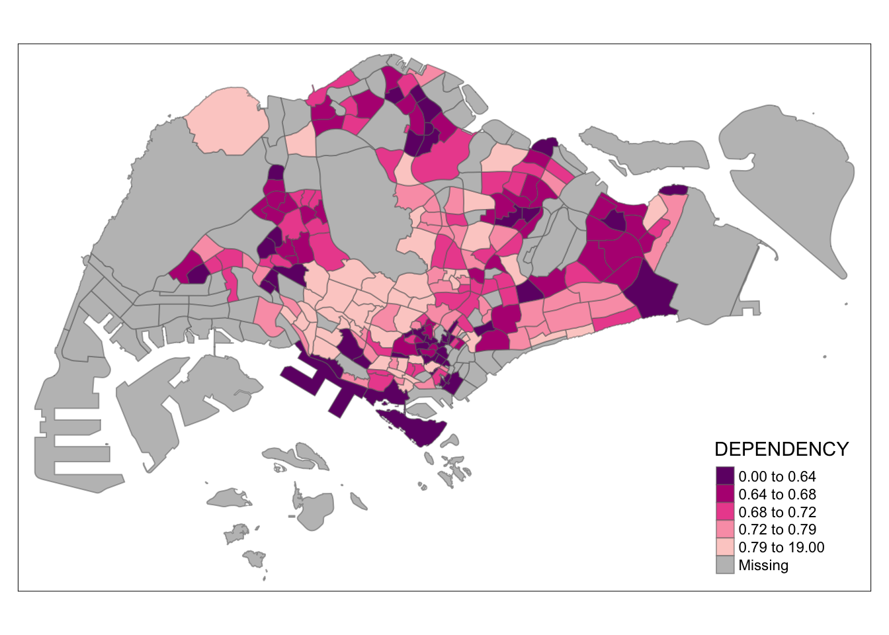
Note: The colour scheme has been reversed
6.0 Map Layouts
6.1 Map Legend
tm_shape(mpsz_pop2020) +
tm_fill("DEPENDENCY",
style="jenks",
palette = "BuPu",
legend.hist = TRUE,
legend.is.portrait = TRUE,
legend.hist.z = 0.1) +
tm_layout(main.title = "Distribution of Dependency Ration by planning subzone \n(Jenks classification)",
main.title.position = "center",
main.title.size = 1,
legend.height = 0.45,
legend.width = 0.35,
legend.outside = FALSE,
legend.position = c("right", "bottom"),
frame = FALSE) +
tm_borders(alpha=0.5)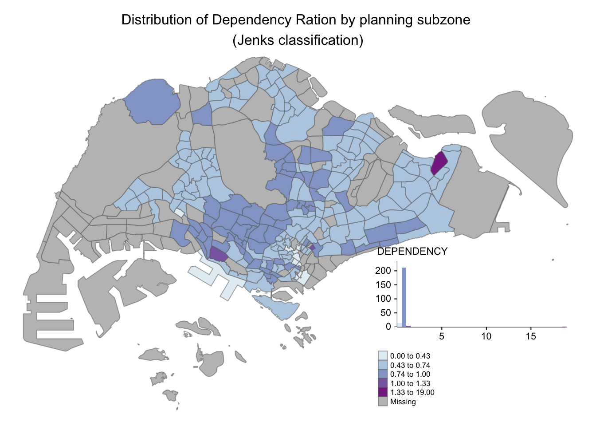
6.2 Map style
tmap allows a wide variety of layout settings to be changed. They can be called by using tmap_style().
The code chunk below shows the natural style is used.
tm_shape(mpsz_pop2020)+
tm_fill("DEPENDENCY",
style="quantile",
palette = "-YlGnBu")+
tm_borders(alpha = 0.3) +
tmap_style("natural")tmap style set to "natural"other available styles are: "white", "gray", "cobalt", "col_blind", "albatross", "beaver", "bw", "classic", "watercolor" 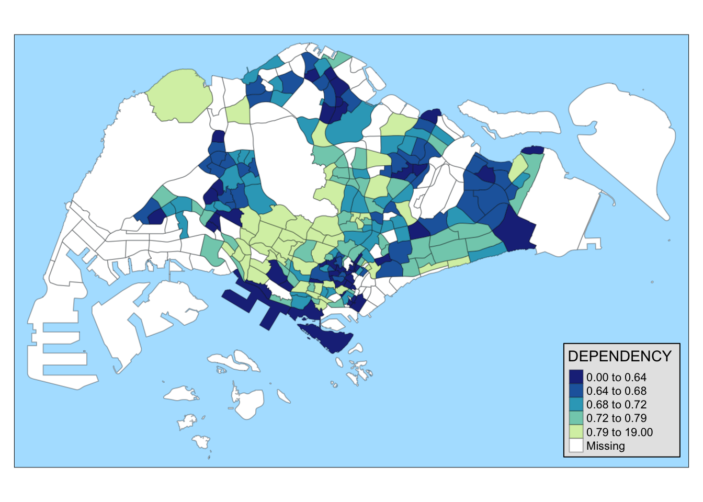
6.3 Cartographic Furniture
Beside map style, tmap also also provides arguments to draw other map furniture such as compass, scale bar and grid lines.
In the code chunk below, tm_compass(), tm_scale_bar() and tm_grid() are used to add compass, scale bar and grid lines onto the choropleth map.
tm_shape(mpsz_pop2020) +
tm_fill("DEPENDENCY",
style = "quantile",
palette = "YlGnBu",
title = "No. of persons") +
tm_layout(main.title = "Distribution of Dependency Ratio \n by planning subzone ",
main.title.position="center",
legend.height = 0.45,
legend.width = 0.35,
frame = TRUE) +
tm_borders(alpha = 0.3) +
tm_compass(type="4star", size = 3)+
tm_scale_bar(width = 0.15) +
tm_grid(lwd = 0.2, alpha = 0.1) +
tm_credits("Source: Planning Sub-zone boundary from Urban Redevelopment Authorithy (URA)\n and Population data from Department of Statistics DOS",
position = c("left", "bottom"))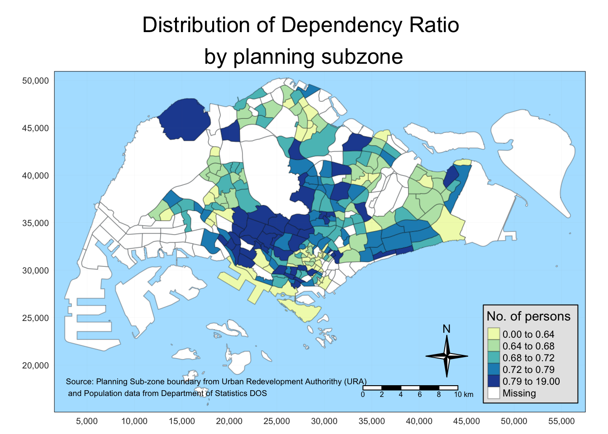
To reset the default style, refer to the code chunk below.
tmap_style("white")tmap style set to "white"other available styles are: "gray", "natural", "cobalt", "col_blind", "albatross", "beaver", "bw", "classic", "watercolor" 7.0 Drawing Small Multiple Choropleth Maps
Small multiple maps, also referred to as facet maps, are composed of many maps arrange side-by-side, and sometimes stacked vertically. Small multiple maps enable the visualisation of how spatial relationships change with respect to another variable, such as time.
In tmap, small multiple maps can be plotted in three ways:
by assigning multiple values to at least one of the asthetic arguments,
by defining a group-by variable in tm_facets(), and
by creating multiple stand-alone maps with tmap_arrange().
7.1 By assigning multiple values to at least one of the aesthetic arguments
In this example, small multiple choropleth maps are created by defining ncols in tm_fill()
tm_shape(mpsz_pop2020) +
tm_fill(c("YOUNG", "AGED"),
style = "equal",
palette = "RdPu") +
tm_layout(legend.position = c("right", "bottom")) +
tm_borders(alpha = 0.3) +
tmap_style("white")tmap style set to "white"other available styles are: "gray", "natural", "cobalt", "col_blind", "albatross", "beaver", "bw", "classic", "watercolor" 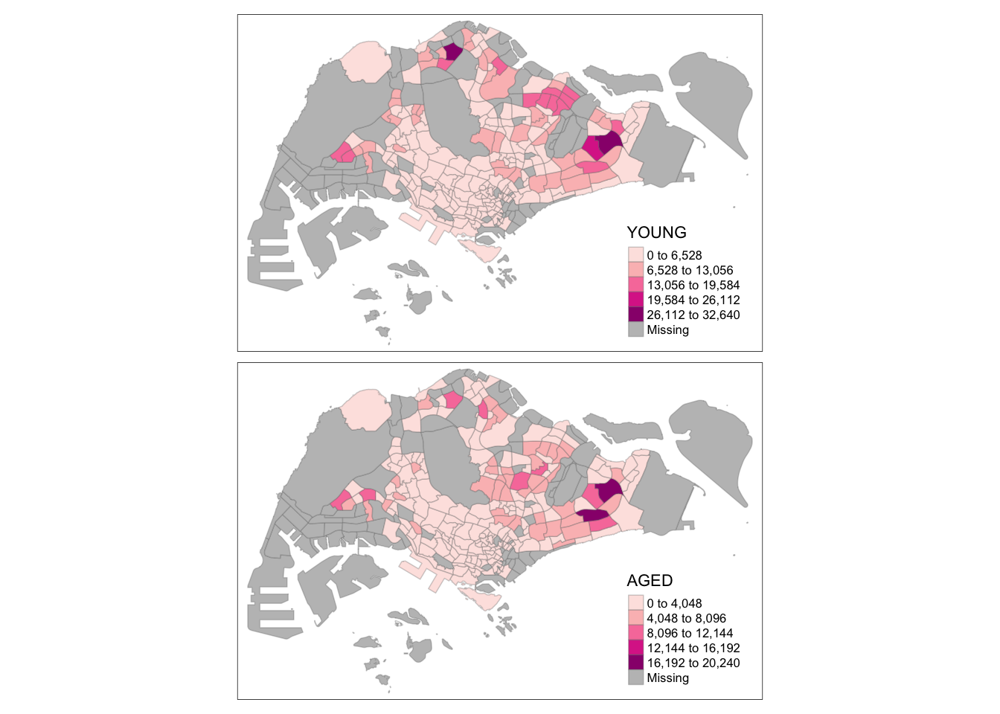
In this example, small multiple choropleth maps are created by assigning multiple values to at least one of the aesthetic arguments
tm_shape(mpsz_pop2020)+
tm_polygons(c("DEPENDENCY", "AGED"),
style=c("equal", "quantile"),
palette=list("Blues", "Purples"))+
tm_layout(legend.position = c("right", "bottom"))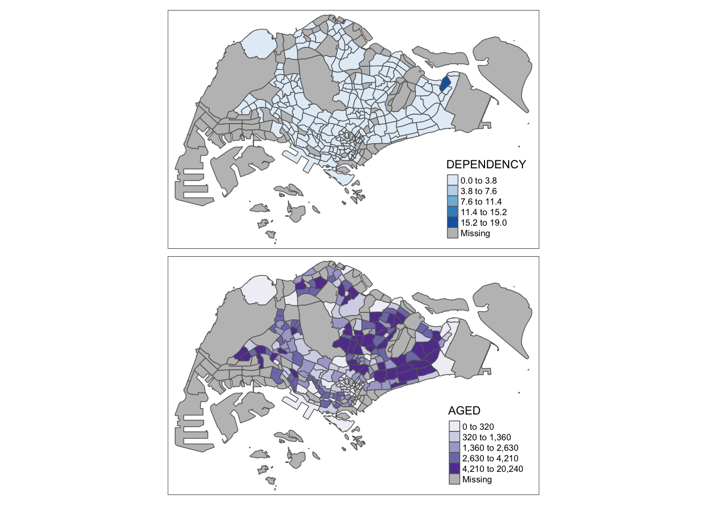
7.2 By defining a group-by variable in tm_facets()
In this example, multiple small choropleth maps are created by using tm_facets().
tm_shape(mpsz_pop2020) +
tm_fill("DEPENDENCY",
style = "quantile",
palette = "Blues",
thres.poly = 0)+
tm_facets(by="REGION_N",
free.coords=TRUE,
drop.shapes=TRUE)+
tm_layout(legend.show = FALSE,
title.position = c("center", "center"),
title.size = 20)+
tm_borders(alpha = 0.5)Warning: The argument drop.shapes has been renamed to drop.units, and is
therefore deprecated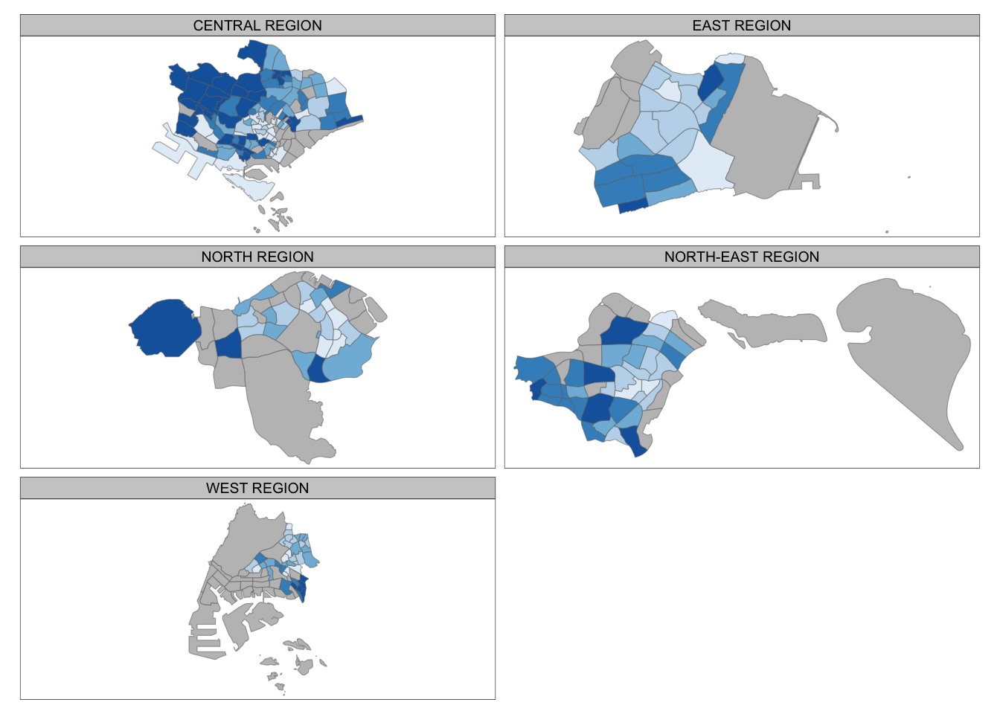
7.3 By creating multiple stand-alone maps with tmap_arrange()
In this example, multiple small choropleth maps are created by creating multiple stand-alone maps with tmap_arrange().
youngmap <- tm_shape(mpsz_pop2020)+
tm_polygons("YOUNG",
style="quantile",
palette = "Blues")
agedmap <- tm_shape(mpsz_pop2020)+
tm_polygons("AGED",
style="quantile",
palette = "Blues")
tmap_arrange(youngmap, agedmap, asp=1, ncol=2)
8.0 Mapping Spatial Object Meeting a Selection Criterion
Instead of creating small multiple choropleth map, you can also use selection function to map spatial objects meeting the selection criterion.
map_north <- tm_shape(mpsz_pop2020[mpsz_pop2020$REGION_N=="NORTH REGION", ]) +
tm_fill("DEPENDENCY",
style = "quantile",
palette = "Reds",
legend.hist = TRUE,
legend.is.portrait = TRUE) +
tm_layout(title = 'NORTH Region',
title.position = c('center', 'top'),
legend.outside = TRUE,
legend.height = 0.45,
legend.width = 5.0,
legend.position = c("center", "bottom"),
frame = FALSE) +
tm_borders(alpha = 0.3)
map_central <- tm_shape(mpsz_pop2020[mpsz_pop2020$REGION_N=="CENTRAL REGION", ]) +
tm_fill("DEPENDENCY",
style = "quantile",
palette = "Greens",
legend.hist = TRUE,
legend.is.portrait = TRUE) +
tm_layout(title = 'CENTRAL Region',
title.position = c('right', 'top'),
legend.outside = TRUE,
legend.height = 0.45,
legend.width = 5.0,
legend.position = c("right", "bottom"),
frame = FALSE) +
tm_borders(alpha = 0.3)
tmap_arrange(map_north, map_central)Warning in pre_process_gt(x, interactive = interactive, orig_crs =
gm$shape.orig_crs): legend.width controls the width of the legend within a map.
Please use legend.outside.size to control the width of the outside legend
Warning in pre_process_gt(x, interactive = interactive, orig_crs =
gm$shape.orig_crs): legend.width controls the width of the legend within a map.
Please use legend.outside.size to control the width of the outside legend
Warning in pre_process_gt(x, interactive = interactive, orig_crs =
gm$shape.orig_crs): legend.width controls the width of the legend within a map.
Please use legend.outside.size to control the width of the outside legendSome legend labels were too wide. These labels have been resized to 0.59, 0.59, 0.59, 0.59, 0.59. Increase legend.width (argument of tm_layout) to make the legend wider and therefore the labels larger.Warning in pre_process_gt(x, interactive = interactive, orig_crs =
gm$shape.orig_crs): legend.width controls the width of the legend within a map.
Please use legend.outside.size to control the width of the outside legendSome legend labels were too wide. These labels have been resized to 0.59, 0.59, 0.59, 0.59, 0.59. Increase legend.width (argument of tm_layout) to make the legend wider and therefore the labels larger.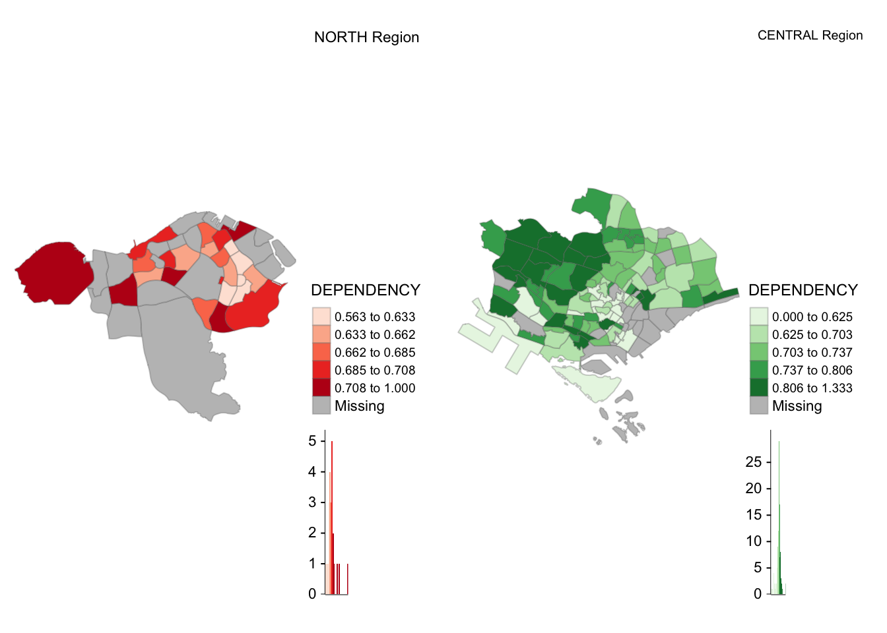